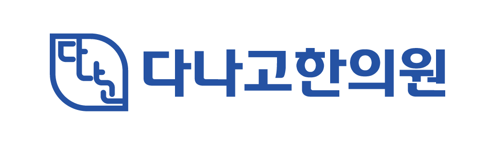

STEP 01
상태 확인
불편한 부위와 증상, 일상에서 느끼는 변화를 함께 확인합니다.

불편한 증상은 사람마다 다르게 나타납니다. 다나고한의원은 증상과 몸 상태를 살펴 진료 방향을 안내합니다. 구체적인 치료 계획은 의료진 상담을 통해 확인해 주세요.
불편한 부위와 증상, 일상에서 느끼는 변화를 함께 확인합니다.
확인한 상태를 바탕으로 가능한 진료와 관리 방향을 설명합니다.
확인한 상태와 상담 내용을 바탕으로 개인별 치료를 진행합니다.
치료 후 증상과 일상에서의 변화를 확인하고 필요한 관리 방향을 상담합니다.
필요한 검사 항목은 의료진 진찰을 통해 결정하며, 검사 결과는 증상과 함께 종합적으로 해석합니다.
근육·힘줄 등 연부조직 상태를 진찰에 참고할 수 있도록 확인합니다.
아이밸런스 체형분석기를 이용해 자세와 신체의 좌우 균형 등을 시각적으로 확인하고 상담에 참고합니다.
브레인바디 자율신경 검사기를 이용해 자율신경 관련 생체신호를 측정하고, 스트레스·회복 상태 등을 진찰과 함께 살펴봅니다.
경희대학교 출신 의료진이 직접 맥을 살피고, 증상과 병력 등을 함께 확인해 체질과 현재 상태를 종합적으로 진찰합니다.
치료 방법과 기간, 보험 적용 여부는 환자 상태와 진료 결과에 따라 달라질 수 있습니다.
통증 부위와 움직임의 불편감을 살펴 침·부항·추나·체외충격파 등을 활용한 치료 방향을 상담합니다.
진료 문의 ↗사고 이후의 통증과 불편감을 진찰하고 개인별 상태에 따라 진료 계획을 세웁니다.
진료 문의 ↗입원 가능 여부를 진찰한 후 당일 입원 상담과 개인병실을 통한 집중 케어를 안내합니다.
진료 문의 ↗문진과 진맥 등 진찰 결과를 바탕으로 개인별 체질과 증상에 맞춘 한약 처방을 상담합니다.
진료 문의 ↗다이어트와 성장 관련 상태를 확인하고, 목적에 맞는 패키지를 상담합니다.
진료 문의 ↗피부 상태와 고민을 확인한 후 개인별 진료 방향을 상담합니다.
진료 문의 ↗10월 의료진 진료 스케줄입니다. 방문 전 진료 일정을 확인해 주세요.
| 의료진 | 월 | 화 | 수 | 목 | 금 | 토 | 일 |
|---|---|---|---|---|---|---|---|
| 김진규 대표원장 | ● | – | ● | – | ● | ● | – |
| 방재호 진료원장 | ● | – | ● | ● | – | – | ● |
| 곽종훈 진료원장 | – | ● | – | ● | – | ● | ● |
| 장혜민 진료원장 | – | ● | – | – | ● | – | – |
● 진료일 · — 비진료일 | 휴진·대진 및 공휴일 일정은 변경될 수 있으므로 방문 전 확인해 주세요.
네 분의 의료진을 소개합니다.
진료원장
진료원장
대표원장
진료원장
다 낫게 해드리고 싶은 마음으로 진료합니다
진료를 할 때마다 저는 늘 두 가지 마음을 되새깁니다.
아픔에 진심으로 공감하는 마음, 진심을 결국 통한다는 믿음. 아파서 처음 한의원을 찾게 되셨고 막연하기만 했습니다.
하지만 공중보건의로 근무하던 시절, 한 원장님께 한의학 치료를 받으며 일상의 변화가 시작됐습니다. 논리적이면서도 따뜻한, 효과적이면서도 마음을 어루만지는 한의학의 힘. 그 경험은 저의 진로 철학이 되었습니다.
지금도 더 나은 치료를 위해 배우고 연구하며, 환자 한 분 한 분의 고민에 공감하고 진심을 전하고자 합니다.
현재 상태와 치료 방향을 이해하기 쉽게 설명합니다.
환자의 이야기에 귀 기울이고 함께 고민합니다.
진료 과정에 정성을 다하고 필요한 사항을 안내합니다.
더 나은 진료를 위해 배우고 발전하겠습니다.
다나고한의원 방문 시 이용 가능한 주차장과 주차 지원 내용을 안내합니다.
주차장 만차 시 골든스퀘어1 주차장 또는 병점 복합타운 공영주차장을 이용하실 수 있습니다.
주차 지원 대상 및 적용 조건은 방문 전 문의해 주세요.
방문 전 예약 가능 여부를 확인해 주세요.
진료시간은 변경될 수 있습니다. 방문 당일 네이버 플레이스 또는 전화로 확인해 주세요.
진료 및 예약 관련 문의는 전화 또는 네이버 플레이이스를 이용해 주세요.